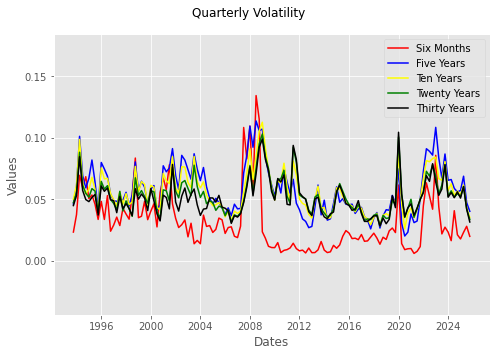
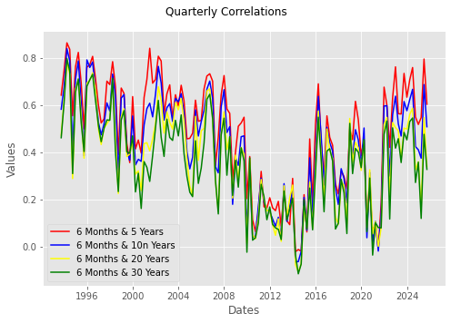
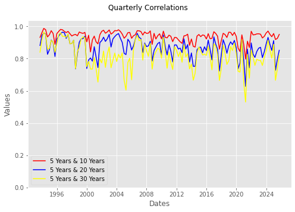
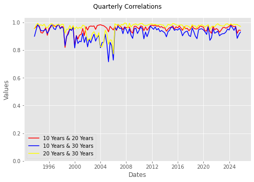

Volatility and Corrleation of Par Yields#
Comparing the volatility and correlation of changes in par yields#
Our empirical analysis examines the volatility and correlation of par yield changes from October 1993 to December 2025, offering a practical view on the application of duration and convexity. The subsequent notebook, titled Changing Slope and Shape of Term Structure, demonstrates how duration and convexity can be employed to construct a trade. This trade is designed to be perfectly hedged against parallel shifts in interest rates, though only partially immunized from non-parallel changes, with its performance dependent on volatility.
Importing Libraries, Modules, and Functions#
As in earlier chapters of the volume, modules that are included in the standard Python library are imported. When necessary, other modules or libraries are installed before they are imported.\(^{2}\) As in Chapter Seven, FRED is used as the source for par yield data and this data is accessed utilizing pandas reader. Because pandas_data_reader is not part of the Pandas library, it is imported and when necessary installed.
import sys
import requests
from types import ModuleType
try:
import pandas as pd
except:
!pip install pandas
import pandas as pd
try:
import pandas_datareader as pdr
except:
!pip install pandas-datareader
import pandas_datareader as pdr
\(^{2}\)For more information on try and except statements, see “Control Statements.”
import sys
import requests
from types import ModuleType
from datetime import datetime,date
try:
import pandas as pd
except:
!pip install pandas
import pandas as pd
try:
import pandas_datareader as pdr
except:
!pip install pandas-datareader
import pandas_datareader as pdr
Adding a custom module and importing functions#
The module_basic_concepts_fixed_income custom module contains functions utilized in the notebooks within the “Basic Concepts of Fixed Income” volume. This module is accessed from Dropbox using requests.
You have the flexibility to choose the module name; in this instance, basic_concepts_fixed_income is assigned to module_name. The URL for access is provided by Dropbox. The module is instantiated with ModuleType using the chosen module_name. Once created, the module becomes accessible in the notebook’s memory, though it is not added to a drive.
url= 'https://www.dropbox.com/scl/fi/4y5hjxlfphh1ngvbgo77q/\
module_-basic_concepts_fixed_income.py?rlkey=6oxi7mgka42veaat79hcv8boz&st=stuou11h&dl=1'
module_name='module_basic_concepts_fixed_income'
try:
response=requests.get(url)
module=ModuleType(module_name)
The exec function executes the Python code returned by request.get. It assigns functions and variables to sys.module[module_name], making the module available to the notebook.
exec(response.text,module.__dict__)
sys.module[module_name]=module
The single function one_y_axis is imported:
from basic_concepts_fixed_income import(one_y_axis)
one_y_axis (Chapter One): Plots multiple series against a single x axis.
# Define the URL of the Python module to be downloaded from Dropbox.
# The 'dl=1' parameter in the URL forces a direct download of the file content.
url= 'https://www.dropbox.com/scl/fi/4y5hjxlfphh1ngvbgo77q/\
module_-basic_concepts_fixed_income.py?rlkey=6oxi7mgka42veaat79hcv8boz&st=stuou11h&dl=1'
module_name='basic_concepts_fixed_income'
# Send an HTTP GET request to the URL and store the server's response.
try:
response=requests.get(url)
# Raise an exception for bad status codes (like 404 Not Found)
response.raise_for_status()
module= ModuleType(module_name)
#Code contained in response.text executed
exec(response.text, module.__dict__)
# Module added to sys
sys.modules[module_name]=module
except requests.exceptions.RequestException as e:
print(f"❌ Error: Could not fetch module from URL. {e}")
except Exception as e:
print(f"❌ Error: Failed to execute or import the module. {e}")
# Open the local file in "write binary" ('wb') mode and save the downloaded content.
# Using a 'with' statement ensures the file is properly closed after writing.
# Now that 'basic_concepts_fixed_income' exists in the notebook, import the specific functions
from basic_concepts_fixed_income import(one_y_axis)
Use Pandas Reader to Access Par Yield Data from FRED between January 1\(^{st}\) 1990 and December 31\(^{st}\) 2025#
Par yield data for five distinct maturities are sourced from the FRED database using the following series IDs:
Six months: dgs6mo
Five years: dgs5
Ten years: dgs10
Twenty years: dgs20
Thirty years: dgs30
The dropna method is used with the dropna assigned any. This coding drops any row with missing data for any of the par yields. The first clean date is October 1\({st}\) 1993.
# set the start and end dates
start_date = date(1990, 1, 1)
end_date = date(2025,12,31)
# series ids
series_ids = ['dgs6mo','dgs5','dgs10','dgs20','dgs30']
# use pandas reader to get data from fred
par_yields_daily = pdr.get_data_fred(series_ids, start_date, end_date)
# if any values are missing drop the row
par_yields_daily.dropna(how='any',inplace=True)
display(par_yields_daily )
| dgs6mo | dgs5 | dgs10 | dgs20 | dgs30 | |
|---|---|---|---|---|---|
| DATE | |||||
| 1993-10-01 | 3.11 | 4.72 | 5.34 | 6.12 | 5.98 |
| 1993-10-04 | 3.17 | 4.71 | 5.34 | 6.10 | 5.99 |
| 1993-10-05 | 3.20 | 4.72 | 5.35 | 6.12 | 6.01 |
| 1993-10-06 | 3.19 | 4.70 | 5.35 | 6.12 | 6.01 |
| 1993-10-07 | 3.17 | 4.69 | 5.33 | 6.11 | 6.01 |
| ... | ... | ... | ... | ... | ... |
| 2025-12-24 | 3.59 | 3.70 | 4.15 | 4.75 | 4.79 |
| 2025-12-26 | 3.58 | 3.68 | 4.14 | 4.76 | 4.81 |
| 2025-12-29 | 3.59 | 3.67 | 4.12 | 4.75 | 4.80 |
| 2025-12-30 | 3.59 | 3.68 | 4.14 | 4.76 | 4.81 |
| 2025-12-31 | 3.59 | 3.73 | 4.18 | 4.79 | 4.84 |
8066 rows × 5 columns
Grouping the par yields by quarter#
To empirically demonstrate the relationship between changes in par yield standard deviations and their correlations, calculations are performed for each calendar quarter. The Pandas groupby method is used to create specific data groupings. Changes in par yields are categorized into quarterly groups using Grouper with the frequency set to ‘QS’ for the start of the quarter.
The data grouping method is illustrated using data from the first quarter of 2025. After creating the q1_group, the sum method is applied to q1_group, and the DataFrame par_yield_q1_2025 with identical results.
# create the DataFrame for q1 2025
par_yield_q1_2025=par_yields_daily.loc['2025-01-01':'2025-03-31']
# group the data by quarter
q1_group = par_yield_q1_2025.groupby(pd.Grouper(freq='QS'))
# display the results of applying sum method to the q1_group
display('Grouped Data',q1_group[['dgs6mo','dgs5','dgs10','dgs20','dgs30']].sum())
# display the results of applying sum method to the DataFrame for q1 2025
display('Raw Data',par_yield_q1_2025.sum())
'Grouped Data'
| dgs6mo | dgs5 | dgs10 | dgs20 | dgs30 | |
|---|---|---|---|---|---|
| DATE | |||||
| 2025-01-01 | 260.98 | 259.25 | 271.67 | 290.29 | 287.42 |
'Raw Data'
dgs6mo 260.98
dgs5 259.25
dgs10 271.67
dgs20 290.29
dgs30 287.42
dtype: float64
Creating quarterly groups and calculating standard deviations#
The quarterly_groups object is created after calculating the changes in par yields using the difference (diff) method. The standard deviation (std) method is then applied to these par yield changes, and the results are assigned to quarterly_sigma_df. The results for 129 quarters are displayed.
# calculate daily differences for all par yields
par_yield_changes = par_yields_daily.diff()
# want daily difference grouped by quarter with start of the quarter (QS)
quarterly_groups = par_yield_changes.groupby(pd.Grouper(freq='QS'))
# apply std method to calculate standard deviation of each quarter
quarterly_sigma_df = quarterly_groups[['dgs6mo','dgs5','dgs10','dgs20','dgs30']].std().round(4)
display(quarterly_sigma_df)
| dgs6mo | dgs5 | dgs10 | dgs20 | dgs30 | |
|---|---|---|---|---|---|
| DATE | |||||
| 1993-10-01 | 0.0232 | 0.0461 | 0.0499 | 0.0472 | 0.0448 |
| 1994-01-01 | 0.0374 | 0.0602 | 0.0616 | 0.0551 | 0.0529 |
| 1994-04-01 | 0.0694 | 0.1012 | 0.0987 | 0.0882 | 0.0846 |
| 1994-07-01 | 0.0594 | 0.0692 | 0.0637 | 0.0614 | 0.0571 |
| 1994-10-01 | 0.0683 | 0.0592 | 0.0544 | 0.0548 | 0.0497 |
| ... | ... | ... | ... | ... | ... |
| 2024-10-01 | 0.0210 | 0.0559 | 0.0566 | 0.0545 | 0.0560 |
| 2025-01-01 | 0.0176 | 0.0571 | 0.0536 | 0.0522 | 0.0509 |
| 2025-04-01 | 0.0230 | 0.0687 | 0.0615 | 0.0602 | 0.0603 |
| 2025-07-01 | 0.0279 | 0.0472 | 0.0428 | 0.0421 | 0.0420 |
| 2025-10-01 | 0.0197 | 0.0401 | 0.0351 | 0.0335 | 0.0314 |
129 rows × 5 columns
Application: Calculate the standard deviations for 2025#
see Chapter Eight Hints: Calculate the standard deviations for 2025, and check the expected results here.
Calculate quarterly correlations of changes in par yields#
There are ten unique correlations between par yields for five maturity dates. The calc_correl_par_yields uses the corr Pandas method to calculate the correlation of the series for each quarter. The correlation results are a dictionary within a Pandas series that then forms the columns of a Dataframe.
def calc_correl_par_yields(data):
# use the corr method to calculate correlations
# each element of a pandas series column of correlations
return pd.Series({
'_6_mo_5_y':data['dgs6mo'].corr(data['dgs5']),
'_6_mo_10_y':data['dgs6mo'].corr(data['dgs10']),
'_6_mo_20_y':data['dgs6mo'].corr(data['dgs20']),
'_6_mo_30_y':data['dgs6mo'].corr(data['dgs30']),
'_5_y_10_y':data['dgs5'].corr(data['dgs10']),
'_5_y_20_y':data['dgs5'].corr(data['dgs20']),
'_5_y_30_y':data['dgs5'].corr(data['dgs30']),
'_10_y_20_y':data['dgs10'].corr(data['dgs20']),
'_10_y_30_y':data['dgs10'].corr(data['dgs30']),
'_20_y_30_y':data['dgs30'].corr(data['dgs20'])})
The correlation coefficients for each quarter are rounded to four decimal points before being added to the DataFrame quarterly_corr_df.
# DataFrame contains quarterly calculations of pairwise correlations of par yields
# of different maturities
quarterly_corr_df = quarterly_groups.apply(calc_correl_par_yields).round(4)
display(quarterly_corr_df)
| _6_mo_5_y | _6_mo_10_y | _6_mo_20_y | _6_mo_30_y | _5_y_10_y | _5_y_20_y | _5_y_30_y | _10_y_20_y | _10_y_30_y | _20_y_30_y | |
|---|---|---|---|---|---|---|---|---|---|---|
| DATE | ||||||||||
| 1993-10-01 | 0.6414 | 0.5816 | 0.4717 | 0.4608 | 0.9320 | 0.8821 | 0.8400 | 0.9568 | 0.8999 | 0.9544 |
| 1994-01-01 | 0.7468 | 0.6776 | 0.6238 | 0.6088 | 0.9611 | 0.9438 | 0.9154 | 0.9672 | 0.9444 | 0.9792 |
| 1994-04-01 | 0.8632 | 0.8389 | 0.7792 | 0.7974 | 0.9875 | 0.9587 | 0.9656 | 0.9801 | 0.9842 | 0.9936 |
| 1994-07-01 | 0.8358 | 0.7867 | 0.7306 | 0.7421 | 0.9796 | 0.9533 | 0.9476 | 0.9746 | 0.9650 | 0.9782 |
| 1994-10-01 | 0.5537 | 0.3950 | 0.2875 | 0.3087 | 0.9348 | 0.8270 | 0.8587 | 0.9266 | 0.9415 | 0.9831 |
| ... | ... | ... | ... | ... | ... | ... | ... | ... | ... | ... |
| 2024-10-01 | 0.5487 | 0.4230 | 0.3252 | 0.2709 | 0.9361 | 0.8509 | 0.8024 | 0.9692 | 0.9426 | 0.9867 |
| 2025-01-01 | 0.5171 | 0.4097 | 0.3591 | 0.3574 | 0.9557 | 0.9117 | 0.8891 | 0.9721 | 0.9666 | 0.9845 |
| 2025-04-01 | 0.5465 | 0.3740 | 0.1605 | 0.1186 | 0.9187 | 0.7278 | 0.6655 | 0.9214 | 0.8850 | 0.9847 |
| 2025-07-01 | 0.7946 | 0.6862 | 0.5459 | 0.4755 | 0.9258 | 0.7968 | 0.7369 | 0.9446 | 0.9124 | 0.9772 |
| 2025-10-01 | 0.6031 | 0.5074 | 0.3385 | 0.3268 | 0.9502 | 0.8517 | 0.8220 | 0.9428 | 0.9304 | 0.9717 |
129 rows × 10 columns
Plotting the results#
The historical volatilities and correlations are visualized across four plots. The plot_vol_corr_results function is designed to prevent unnecessary code duplication. It accepts either volatility or correlation data, names for the data series, and a title, then calls the imported one_y_axis function.
def plot_vol_corr_results(data,series,title):
xaxis=data[0].index
xlabel='Dates'
ylabel='Values'
upper=max(data[0])+0.05
min_series=[min(series) for series in data]
lower=min(0,min(min_series)-0.05)
markers=['']*len(series)
ylim=[lower,upper]
size=(7,5)
list_colors=['red','blue','yellow','green','black']
colors=[list_colors[i] for i in range(len(data))]
save_config={}
one_y_axis(xaxis,data,title,series,xlabel,ylabel,markers,size,ylim,
save_config=save_config,colors=colors)
Plotting the quarterly volatility#
# populate data list according to DataFrame columns of quarterly standard deviations
data=[quarterly_sigma_df['dgs6mo'],
quarterly_sigma_df['dgs5'],
quarterly_sigma_df['dgs10'],
quarterly_sigma_df['dgs20'],
quarterly_sigma_df['dgs30']]
series=['Six Months',
'Five Years',
'Ten Years',
'Twenty Years',
'Thirty Years']
title='Quarterly Volatility'
plot_vol_corr_results(data,series,title)

The graph leads to two clear conclusions:#
Rate variability has changed over time. It spiked during the financial crisis and dropped significantly following the Federal Reserve’s massive balance sheet expansion.
The difference in variability among rates is tied to the maturity of the par yields. Six-month and five-year par yields show greater variability compared to ten, twenty, and thirty-year par yields. Although the variability of the longer maturities (ten, twenty, and thirty-year) is generally similar, it is not identical.
Application: Plot the volatility for the ten, twenty, and thirty-year par yields: 1993 - 2025#
Plotting the quarterly correlations of six month with longer maturity par yields#
data=[quarterly_corr_df['_6_mo_5_y'],
quarterly_corr_df['_6_mo_10_y'],
quarterly_corr_df['_6_mo_20_y'],
quarterly_corr_df['_6_mo_30_y']]
series=['6 Months & 5 Years',
'6 Months & 10n Years',
'6 Months & 20 Years',
'6 Months & 30 Years']
title='Quarterly Correlations'
plot_vol_corr_results(data,series,title)

The correlation between the six-month yield and the five, ten, twenty, and thirty-year yields is highly volatile, ranging from greater than 0.8 to negative figures. The highest points for these correlations were observed during the 2008 financial crisis, the 2020 pandemic, and the most recent period marked by multiple increases in the target rates for the FED funds.
Plotting the quarterly correlations of five year with ten, twenty, and thirty year par yields#
data=[quarterly_corr_df['_5_y_10_y'],
quarterly_corr_df['_5_y_20_y'],
quarterly_corr_df['_5_y_30_y']]
series=['5 Years & 10 Years',
'5 Years & 20 Years',
'5 Years & 30 Years']
title='Quarterly Correlations'
plot_vol_corr_results(data,series,title)

The correlation between five-year par yields and longer-maturity par yields is more pronounced and less variable than that observed for six-month par yields; However, these five-year correlations still show a significant range, varying from over 0.9 to under 0.6. This pattern mirrors, in a less extreme way, the results found for the six-month maturity.
Plotting the quarterly correlations of ten year with twenty and thirty year par yields#
data=[quarterly_corr_df['_10_y_20_y'],
quarterly_corr_df['_10_y_30_y'],
quarterly_corr_df['_20_y_30_y']]
series=['10 Years & 20 Years',
'10 Years & 30 Years',
'20 Years & 30 Years']
title='Quarterly Correlations'
plot_vol_corr_results(data,series,title)

The relevance of the par yield data#
Interest rates generally trend together, though they rarely move in perfect unison. Longer-term rates show the closest correlations, but the relations are imperfect and often diverge significantly. The way rates behave is a crucial factor when using duration. Duration measures a bond’s price change in response to a change in its own yield-to-maturity, but it will inaccurately predict the price change of a bond that experiences a different change in its yield to maturity. Caution is necessary when using duration to assess the interest rate risk of various bonds and when calculating hedges against interest rate movements. The forthcoming notebook, Changing Slope and Shape of Term Structure, will further explore how effective duration hedges are when interest rates do not change in parallel. A convexity trade requires a long position and short position in bonds that is duration neutral. With non-parallel changes in interest rates, the results of the convexity trade are often profitable but also unpredictable.